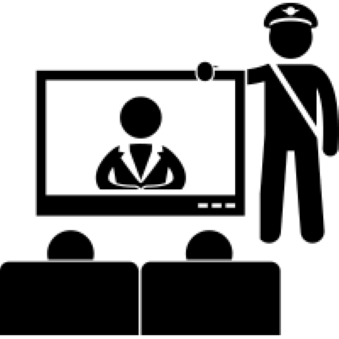

Censorship in TV and Film
Censorship in Television
In North Korea most of the televisions come with one single channel. In order to access the other 3 channels a digitial television or a converter box is required. North Korean citizens are prohibited from accessing broadcast waves for any other country. At the beginning of each channel's broadcast they play the song of General Kim Il Sung and the song of General Kim Jong Il. The four channels that are offered are:
Korean Central Television (KCTV)
Korean Central Television is the main network in North Korea. This is the only channel that is offered on single channel televisions. This channel typically braodcasts the news, the weather, military and political events, and tv sitcomes centered around the revolutionary life.
Mansudae Television
Mansudae is an educational Korean network. Mansudae is one of the 3 channels that can be accessed through a digital television or a converter box. Mansudae is only broadcast on the weekends. The shows on this network range from programs about North Korean art, history, culture, and sports.
Rayongnamsam TV
Rayongnamsam TV broadcasts five days a week. The channel offers some educational programs and movies in different languages. Rayongnamsam programs are geared towards college students.
Sports Television
Sports Television broadcasts on Saturdays and Sundays. The sports television channel offers domestic and international sporting events. Prior to airing, sporting events are edited.
Censorship in Film
Citizens are not permitted to access any foreign media without punishment. There are also Korean produced films that have been banned as well. There have not been any reasons issued as to why these films have been banned. The banned films include:
- Unknown Heroes
- Nunsokyi of the Spring
- Taehongan, High Ranking Secretary
- The Schoolgirl's Diary
U.S. Films have also been banned for visitors as well. These films include:
- Team America: World Police
- 2012
- The Interview
By Gan Khoon Lay In the Censorship Collection